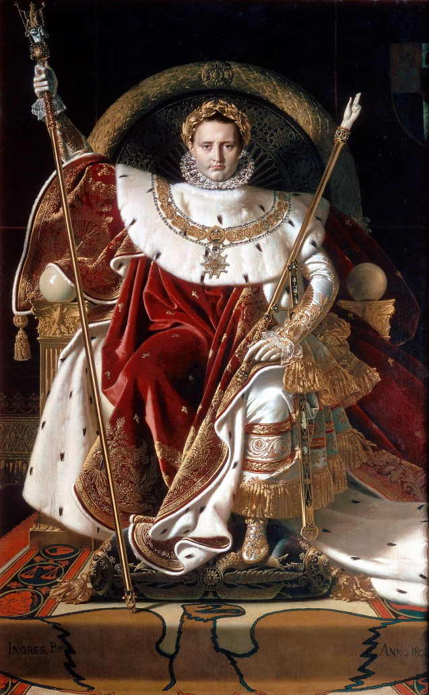

By 1799, the French Revolutionary government was failing, and the country was exhausted by political infighting and economic collapse. Napoleon, returning from his campaign in Egypt as a national hero, saw his opportunity. On November 9, 1799 (the 18th of Brumaire in the Revolutionary calendar), he led a military coup that overthrew the Directory. He replaced it with the Consulate, naming himself "First Consul." Although it was technically still a republic, Napoleon held all the real power, effectively ending the French Revolution and beginning his personal rule over France. He quickly worked to stabilize the nation, inviting back exiles and restoring the Catholic Church through the Concordat of 1801, which helped heal the deep social wounds left by years of radical violenc
